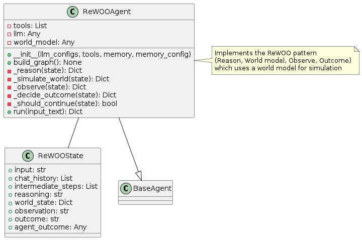
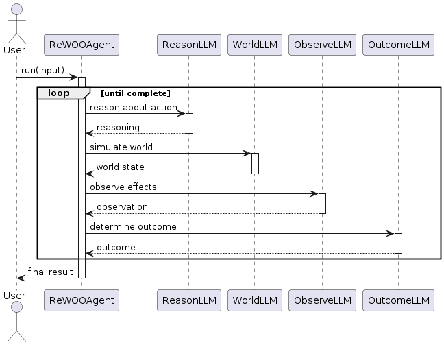
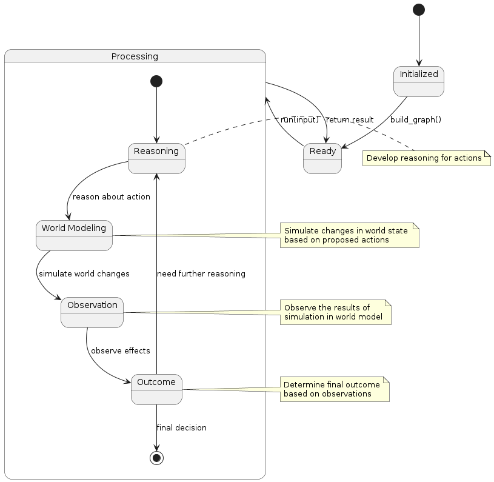

ReWOO Pattern
Overview
The ReWOO (Reason, World model, Observe, Outcome) pattern incorporates a world model into the agent architecture to simulate the effects of potential actions before executing them. This pattern involves:
Reasoning: The agent reasons about potential actions
World Modeling: A world model simulates the effects of those actions
Observation: The agent observes the simulated outcomes
Outcome Selection: The agent chooses the most promising action based on simulations
The key innovation is the use of a mental model or simulation to predict outcomes before taking action, enabling more informed decision-making.
Diagrams
Class Structure

The ReWOO pattern is implemented through:
ReWOOState: Maintains state including reasoning, world state, observations, and outcomes
ReWOOAgent: Implements the ReWOO cycle with methods for each phase
BaseAgent: The abstract base class from which the ReWOO agent inherits
Execution Flow

The execution flow follows:
User provides input to the ReWOOAgent
The agent reasons about possible actions (Reason phase)
The world model simulates the effects of these actions (World model phase)
The agent observes the simulated outcomes (Observe phase)
The agent selects the most promising action based on observations (Outcome phase)
The cycle repeats until a final answer is determined
Final result is returned to the user
State Transitions

The ReWOO pattern transitions through these states:
Initialized: Agent is created but not yet ready
Ready: Agent is ready to process input
Processing: Agent is actively working on the task
Reasoning: Agent is reasoning about possible actions
World Modeling: Agent is simulating effects of actions
Observation: Agent is analyzing simulation results
Outcome: Agent is selecting the best action
Final state is reached when the agent determines a final answer
Use Cases
Decision Making: When evaluating multiple possible actions
Planning with Uncertainty: When outcomes are uncertain and need simulation
Risk Assessment: For tasks where errors could have significant consequences
Strategy Games: For gaming AIs that need to evaluate multiple move options
Creative Problem Solving: When innovative solutions need to be evaluated before implementation
Safety-Critical Applications: When testing actions mentally before execution is important
Implementation Guide
Here’s a simple example of using the ReWOOAgent:
from agent_patterns.patterns import ReWOOAgent
from agent_patterns.core.tools import ToolRegistry
# Configure the LLMs
llm_configs = {
"default": {
"provider": "openai",
"model": "gpt-4o",
"temperature": 0.7
},
"world_model": {
"provider": "openai",
"model": "gpt-4o",
"temperature": 0.2 # Lower temperature for more deterministic world model
},
"observer": {
"provider": "openai",
"model": "gpt-4o",
"temperature": 0.5
}
}
# Initialize the ReWOO agent
agent = ReWOOAgent(
llm_configs=llm_configs,
max_steps=10
)
# The world model is built into the agent and doesn't require external tools
# Run the agent on a decision-making task
scenario = """
You are the CEO of a company facing these options:
1. Expand to international markets
2. Focus on enhancing current product line
3. Invest in new technology development
Which strategic direction should the company take given current resources are limited?
"""
result = agent.run(scenario)
print(result)
Example References
The examples directory contains implementations of the ReWOO pattern:
examples/rewoo_basic.py: Basic ReWOO implementationexamples/rewoo_complex.py: ReWOO with more sophisticated world model
Best Practices
Design world models appropriate to the domain (physical, social, financial, etc.)
Calibrate world models against reality when possible
Consider multiple scenarios in the world model phase
Use low temperature settings for more deterministic world models
Include probabilistic outcomes for more realistic simulations
Store successful simulations in memory for future reference
Implement different fidelity levels for the world model based on task requirements